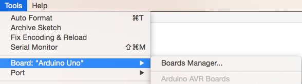

Installing Arduino IDE¶
Next install arduino IDE:
# considering you'd saved your .tar on Downloads:
~$ cd ~/Downloads/
~/Downloads$ tar -xvJf arduino-1.6.13-linux64.tar.xz
~/Downloads$ cd arduino-1.6.13
~/Downloads/arduino-1.6.13$ ./install.sh
export LD_LIBRARY_PATH=$LD_LIBRARY_PATH:/usr/lib/jni
sudo usermod -a -G tty $(whoami)
sudo usermod -a -G dialout $(whoami)
Log off and log on again for the changes to take effect!
Now you have Arduino IDE on your pc, it can be accesed from unity menu by justing searching for Arduino.
Let’s install pro micro board on our arduino IDE
Firts you’ll need to point the Arduino IDE board manager to a custom URL. Open up Arduino, then go to the Preferences (File > Preferences). Then, towards the bottom of the window, paste this URL into the “Additional Board Manager URLs” text box:
https://raw.githubusercontent.com/sparkfun/Arduino_Boards/master/IDE_Board_Manager/package_sparkfun_index.json
Click OK. Then open the Board Manager by clicking Tools, then hovering over the Board selection tab and clicking Board Manager.
Search for ‘sparkfun’ in the Board Manager. You should see the SparkFun AVR Boards package appear. Click install, wait a few moments, and all the .brd files you’ll need should be installed, indicated by the blue ‘Installed’ that is printed next to the package.

You should now be able to upload code to a number of SparkFun Arduino-compatible products, including the Fio and the Pro Micro.